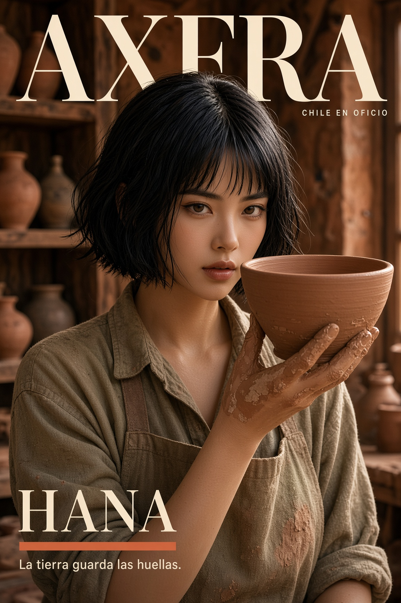
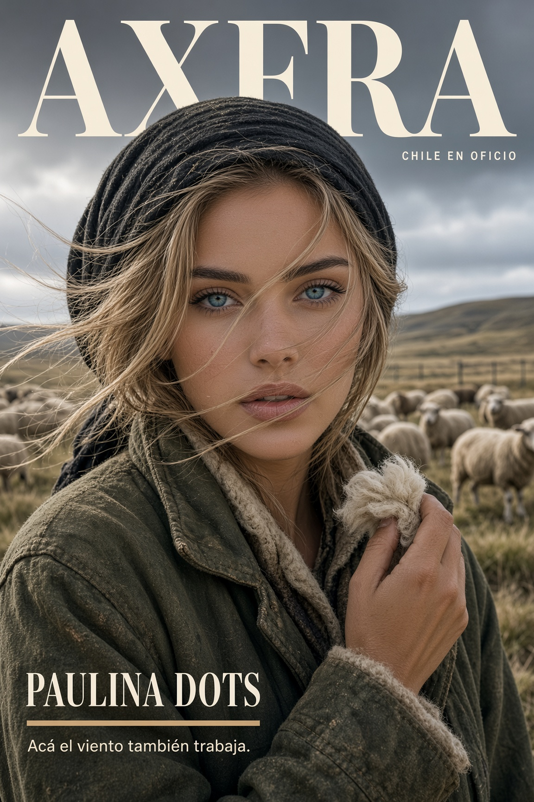
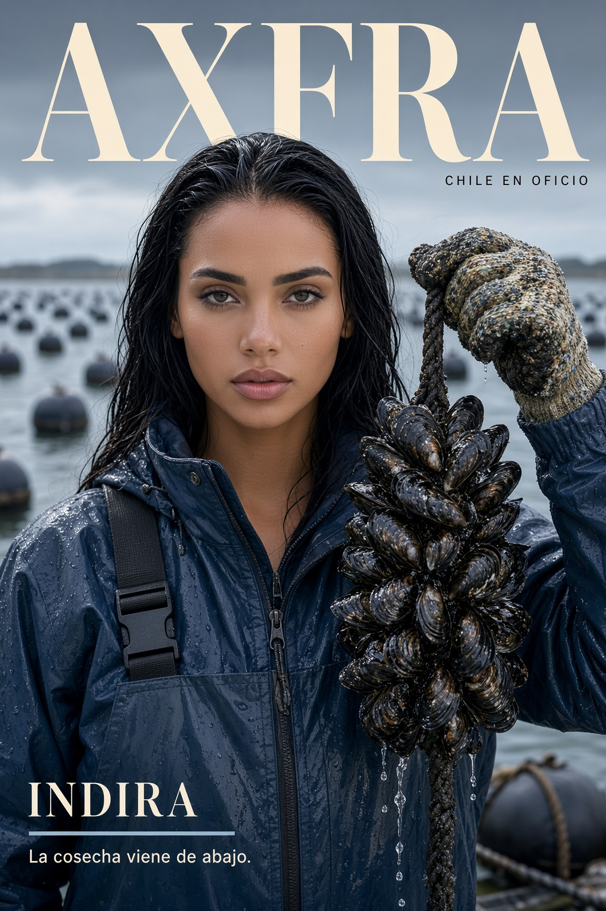

Minería del cobre · Chuquicamata
Amina
El retrato pasa del satén dorado a casco, antiparras y ropa de faena. El rajo y el camión al fondo le dan escala a la escena.
AXFRA / Demostración editorial
Ocho identidades, dieciséis portadas. Del retrato de estudio a los oficios de Chile, una misma estructura editorial cambia de materiales, escenarios y voz.
Explorar las portadas ↓El gesto junto al rostro y el encuadre vertical dan continuidad a la serie. Cambian las combinaciones de color, tela y fondo, del satén junto al metal al terciopelo frente a una superficie envejecida.
El gesto se vuelve acción. Una red, un cuenco o una cuerda de cultivo cuentan el oficio en primer plano. El paisaje o el taller lo sitúan, y la frase invita a mirar otro detalle.
Ocho pares para comparar qué cambia en cada identidad al pasar del estudio al oficio. Selecciona una portada para abrirla en tamaño completo.
Minería del cobre · Chuquicamata
El retrato pasa del satén dorado a casco, antiparras y ropa de faena. El rajo y el camión al fondo le dan escala a la escena.
Sal de Cáhuil
La palma abierta ocupa el lugar de la mano al mentón. El brillo suave del estudio da paso al sol reflejado en las salinas.
Pesca artesanal
Del terciopelo al impermeable. La red cruza el primer plano y la caleta detrás sitúa el gesto en su entorno.
Greda de Pomaire
El foco pasa del acabado del vestido al borde del cuenco. La luz cálida y los estantes de cerámica le dan continuidad al material.

Vendimia
El racimo ocupa el primer plano y las hileras de la viña abren la profundidad. El ciruela conecta el vestuario con lo que sostiene.
Tejido en telar
Un hilo junto al rostro enlaza el gesto de la mano con la trama del telar. La fibra pasa a ser el centro de la escena.
Oficio ovejero patagónico
La lana, la chaqueta y el pelo movido por el viento reemplazan el acabado de estudio. El rebaño y la estepa amplían el retrato.

Cultivo de choritos
Del plateado de estudio a los reflejos sobre las conchas mojadas. La cuerda y las líneas de boyas conectan el detalle con el lugar de trabajo.

La cabecera, el formato 2:3 y el bloque inferior de nombre, línea y texto hicieron de plantilla. Cada portada combinó esa estructura con la referencia visual de una identidad y las decisiones de dirección de arte de su edición.
Beauty Issue conserva el planteamiento del retrato. Describe el tejido del vestido, el material del fondo y su acabado por separado para poder probar, por ejemplo, satén frente a metal con la misma dirección de luz.
Chile en oficio vincula la pose con un objeto y su entorno. En Chuquicamata, el rajo permite entender la escala del camión. En Cáhuil, la sal de la palma y las pozas al fondo hacen que la frase tenga un referente visual.
Contrasta la portada con su JSON y revisa tres cosas: si se reconoce la identidad, si se entiende el gesto y si el titular se lee completo. La posición y el ancho de la línea pueden variar en el render aunque estén descritos en el módulo.
Los JSON documentan instrucciones editoriales. Para probar una variación, combina una referencia propia con la plantilla, cambia una decisión por vez y compara los resultados. Las escenas de Chile en oficio son interpretaciones visuales generadas con IA.
Descargar plantilla Beauty Issue Explorar la librería JSON ↗
Una mano enmarca el rostro en Beauty Issue. En Chile en oficio, esa misma posición permite mostrar la sal, tensar una red o levantar un cuenco. La comparación muestra cómo una decisión de pose puede cambiar el sentido de una imagen sin perder la continuidad de la serie.